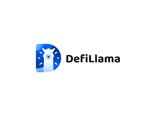

DefiLlama's Dance: How Aggregators Are (Slowly) Saving Web3 from Itself
So, I was trying to swap some ETH for this obscure meme coin – you know the type, promises to the moon, fueled by pure hype – and I nearly threw my laptop out the window. Navigating the DeFi landscape felt like trying to assemble IKEA furniture blindfolded, while simultaneously being attacked by a swarm of overly enthusiastic but ultimately unhelpful bees. This, my friends, is the current state of Web3 UX for a lot of us.
Then, like a digital knight in shining armor (or maybe more accurately, a slightly glitchy knight in slightly-tarnished armor), DefiLlama rode in. For those uninitiated, DefiLlama is a data aggregator – a website that pulls data from various decentralized finance protocols, allowing you to compare yields, track TVL (Total Value Locked), and, most importantly for my near-meltdown, find the best place to make that cursed meme coin swap.
Before DefiLlama, (and other aggregators like it), finding the optimal swap route was a herculean task. You’d bounce between Uniswap, SushiSwap, Curve, and a dozen other platforms, each with its own interface, fees, and quirks. It was exhausting, time-consuming, and frankly, demoralizing. It felt like the whole point of decentralized finance – to empower the individual – was getting lost in the overwhelming complexity.
And isn't that ironic? We’re aiming for a more democratic, transparent financial system, yet the user experience often feels more exclusive than a members-only yacht club. Is this truly decentralization, or just a cleverly disguised form of gatekeeping? I’m still grappling with that one.
Aggregators like DefiLlama are attempting to solve this. They’re building bridges, or maybe more accurately, constructing a sensible road map across this chaotic DeFi wilderness. They streamline the process, offering a centralized (dare I say it?) view of a decentralized world. This, of course, raises the question: are we sacrificing some of the inherent decentralization for the sake of usability?

The answer, I suspect, is a nuanced “maybe.” It’s a trade-off. We gain ease of use, but we rely on a single point of data aggregation. Ideally, these aggregators should be transparent, open-source, and auditable to maintain trust. There’s a degree of faith involved, which I find a bit unsettling; I’d much prefer a system where trust is algorithmically verifiable, but we’re not quite there yet, are we?
My experience with Swap Llama , however, has been overwhelmingly positive. It saved me from a DeFi-induced existential crisis, and that alone deserves a medal. It hasn't magically solved all the problems – the fees can still sting, slippage is a persistent annoyance, and occasionally the site feels a little slow. But it's a giant leap in the right direction.
Looking back, this wasn't just a story about a meme coin swap. It’s a reflection on the evolving nature of Web3. We're still in the early days, building the infrastructure as we go. Aggregators like DefiLlama are crucial for bridging the gap between the potential of decentralized finance and the reality of user experience. It's messy, it's iterative, it's full of compromises, but ultimately, it's a journey worth taking. And honestly, if DefiLlama keeps preventing me from throwing my laptop out the window, I'll be eternally grateful.
Defi Llama's Secret Sauce: Unlocking the Metaverse's Hidden Pantry
Okay, confession time. I’m not exactly a DeFi guru. I mean, I get the basics – decentralized finance, yield farming, all that jazz. But trying to navigate the actual landscape feels like trying to find a specific spice in a poorly organized, multi-dimensional spice rack belonging to a particularly chaotic chef. You know, the kind who just throws everything in together and hopes for the best.
That’s where DefiLlama, and specifically their Swap feature, comes in. It’s less like a single spice, and more like…a really well-organized spice rack with a helpful chef. It’s that unifying layer, that often-overlooked but absolutely essential piece of infrastructure quietly making the whole chaotic DeFi experience a little less…chaotic.
See, before DefiLlama’s Swap, finding the right DEX (decentralized exchange) to trade a specific token often felt like a wild goose chase. You’d bounce between Uniswap, Pancakeswap, SushiSwap, and a dozen others, each with its own quirks, fees, and interfaces. It felt inefficient, frankly frustrating, and sometimes downright demoralizing. It’s like searching for a specific ingredient in a dozen different international grocery stores, each with a different language and currency.
DefiLlama’s Swap, though, aggregates liquidity across different DEXs. You tell it what you want to trade, and it does the legwork, finding the best price and routing your transaction efficiently. It's like having a personal shopper for your DeFi needs, someone who knows exactly where to find that elusive saffron (or, you know, that obscure meme coin).
Now, I know what some of you are thinking: “Aggregators are nothing new.” And you’re right. But DefiLlama’s approach feels different. It’s not just about finding the cheapest price; it’s about making the whole experience user-friendly. The interface is clean, the data is readily available, and the process is surprisingly smooth. It's a breath of fresh air in a world that often feels overly complicated and intentionally opaque.
There’s still a level of trust involved, of course. You’re essentially handing your tokens over to an aggregator, and you need to trust that they're routing your trades efficiently and securely. And that trust, honestly, is something I grapple with. It’s a constant balancing act between convenience and caution. I’m still figuring out the perfect level of risk tolerance for this kind of thing. (Maybe I need a DeFi risk tolerance spice rack…too much?).
But the convenience is undeniable. It's saved me countless hours of searching, comparing, and calculating – time that I can now spend…well, probably still glued to my screen, but hopefully on something a little more fun than hunting down the perfect liquidity pool.
So, where did this rambling journey lead us? Well, initially I wanted to simply talk about DefiLlama’s Swap. I ended up reflecting on the frustrating complexities of the DeFi landscape, the need for user-friendly tools, and the ever-present tension between convenience and security. It’s a messy, human process, this exploration of the decentralized future. And I think that's exactly why I appreciate DefiLlama’s contribution. It doesn't pretend to be perfect; it simply makes the whole thing a little less painfully complicated, and for that, I’m grateful. It’s like finding that perfectly organized spice rack in the middle of a culinary chaos, a little oasis of order in the DeFi wild west. And sometimes, that’s exactly what you need.
Making your dApp shine: Why DefiLlama's Swap API is your secret weapon (and my accidental obsession)
Okay, confession time. I’m not exactly known for my killer dance moves, but I am ridiculously excited about DefiLlama’s swap API. Sounds weird, right? Bear with me. It all started with a particularly frustrating evening wrestling with a clunky, outdated DEX aggregator in my own little dApp project. It felt like trying to assemble IKEA furniture without instructions – a frustrating, late-night exercise in existential dread.
The user experience was…let’s just say it wasn't winning any awards. Finding accurate, up-to-the-minute swap rates felt like searching for a unicorn in a haystack made of broken promises and fluctuating gas fees. My users (let’s be honest, mostly just me and my very patient beta-tester, Barry) were, to put it mildly, unimpressed. So I started hunting for solutions. That's when I stumbled upon DefiLlama.
Initially, I was skeptical. Another API? Seriously? I already felt like I was drowning in a sea of documentation and cryptic error messages. But DefiLlama's documentation, surprisingly, was actually readable. It felt less like deciphering ancient hieroglyphics and more like having a sensible conversation with a helpful engineer. And the data? Oh my goodness, the data. It’s clean, accurate, and refreshingly comprehensive. Suddenly, my clunky DEX aggregator felt like a rusty jalopy next to a sleek Tesla.
Integrating the DefiLlama swap API wasn’t exactly a walk in the park. There were definitely moments of head-scratching (okay, maybe more like head-banging) and the occasional "why is this not working?!" scream into the void. But the payoff? It was totally worth the effort. My dApp, once the digital equivalent of a deserted theme park, started to buzz with activity. The improved user experience was instantly noticeable.
But it’s not just about the slick visuals. Using DefiLlama's data allows for a whole new level of trust and transparency. Instead of relying on potentially outdated or manipulated information from individual DEXs, I can provide my users with a consolidated, reliable view of the market. This is crucial for building trust, particularly in the still-emerging DeFi space. It’s kind of like having a trusted financial advisor, except this advisor is powered by a robust API and doesn’t charge exorbitant fees.
Now, I’m not saying DefiLlama is a magical solution to all your front-end dApp woes. There are still challenges, like keeping up with the rapid pace of innovation in the DeFi world and ensuring data accuracy in a constantly evolving ecosystem. But the difference it’s made in my own project has been night and day. It’s allowed me to focus more on building a great user experience, and less on wrestling with unreliable data.
This whole journey has been a humbling reminder that even in the world of decentralized finance, a good, reliable API can make all the difference. It’s not just about the tech; it's about building trust and empowering users. And DefiLlama's swap API, with its surprisingly user-friendly interface and incredibly accurate data, is a huge step in that direction. So yeah, maybe I am slightly obsessed. But hey, some obsessions are actually quite productive. Especially when they help you build a killer dApp. Now, if you'll excuse me, I have some more code to write. And maybe a celebratory cup of coffee. This whole thing is making me thirsty.
Decoding DeFi: How DefiLlama Helped Me Stop Feeling Like a Luddite
Remember that scene in "Office Space" where they're trying to navigate that impossibly clunky office software? Yeah, that's how I felt approaching the world of Decentralized Finance (DeFi) before I discovered DefiLlama. It wasn't the lack of tech skills, per se – I'm reasonably competent with computers – it was the sheer opacity of it all. A bewildering maze of protocols, tokens, and acronyms that made my head spin faster than a caffeinated hamster on a wheel.
Seriously, trying to find the right platform, understand the risks, and even just figuring out how to get started felt like deciphering hieroglyphics. I’d spend hours poring over complex documentation, only to emerge more confused than when I started. Was I missing something obvious? Was I just not cut out for this whole blockchain thing? I even considered wearing a tinfoil hat – just to be safe. (Okay, maybe not.)
Then, a friend casually mentioned DefiLlama. At first, I was skeptical. Another website? Another layer of complexity? But curiosity (and a desperate need to understand what all the fuss was about) won out. And let me tell you, it was a game changer.
What struck me immediately wasn’t just the slick interface (though it is pretty nice), but the sheer comprehensiveness and clarity. DefiLlama doesn't just present the data – it organizes it, contextualizes it, and makes it accessible. It’s like having a friendly, knowledgeable guide whispering in your ear, “Hey, this protocol is trending upwards, but watch out for this potential risk.”
Think of it like this: imagine trying to navigate a massive, unfamiliar city without a map or GPS. You'd likely end up lost, frustrated, and probably a little grumpy. DefiLlama is like having Google Maps for DeFi. It shows you the landscape, highlights the key players (protocols), and even lets you compare different routes (strategies).
Now, don't get me wrong, DeFiLlama isn’t a magic bullet. It doesn't eliminate the inherent risks of investing in crypto, and it certainly doesn’t make you an overnight DeFi expert. You still need to do your own research – you're still responsible for your own financial decisions. It's a tool, not a solution. But that's precisely where its genius lies: it empowers you with information, turning you from a bewildered outsider into an informed participant.
There’s something almost beautiful about its simplicity. The way it seamlessly blends data visualization with user-friendly design is a testament to its developers' understanding of the user experience – a stark contrast to the often-cryptic nature of the DeFi space itself.
Looking back, my initial struggles with DeFi now feel somewhat amusing. I used to feel like a digital Luddite, hopelessly out of touch with a rapidly evolving technological landscape. But DefiLlama helped bridge that gap, empowering me to engage with the DeFi world on my own terms, without feeling overwhelmed or intimidated. It didn't just simplify the onboarding process; it rekindled my curiosity and reignited my desire to explore this fascinating and potentially revolutionary space. And that, my friends, is a contribution worth celebrating. So yeah, thanks DefiLlama – you've made a grumpy, crypto-skeptic slightly less grumpy. And that's saying something.
Decoding the DeFi Jungle: How Swap Defi Llama Helps Me (and Maybe You) Keep My Sanity
Okay, confession time. I’m not a DeFi wizard. I don't live and breathe smart contracts. In fact, just last week I spent a good hour trying to figure out why my ETH wasn't showing up in my wallet – a process that involved a level of panicked Googling usually reserved for diagnosing mysterious car noises. But I do want to understand the sprawling, sometimes chaotic world of decentralized finance. And that's where Swap Defi Llama comes in – or at least, that's where my journey to understanding it began.
Imagine trying to understand the entire Amazon rainforest by staring at a single leaf. That's kind of what trying to grasp DeFi feels like sometimes. Thousands of protocols, countless tokens, complex interactions – it's overwhelming. You might even feel a touch of imposter syndrome, like you're hopelessly out of your depth amidst all those blockchain gurus. I know I did.
My initial approach was, frankly, naive. I’d dive into whitepapers, get lost in technical jargon, and end up more confused than when I started. It was like trying to assemble IKEA furniture without instructions – a frustrating exercise in trial, error, and existential dread. I needed a map, a bird's-eye view, something to help me make sense of this intricate ecosystem.
That’s where Swap Defi Llama stepped in, offering precisely that bird's-eye view. It's not a magic bullet, mind you. It won't instantly transform you into a DeFi guru (I haven’t quite achieved that yet!). But it drastically simplifies the complexity, aggregating data from various decentralized exchanges and presenting it in a digestible format. Suddenly, the sheer volume of information feels less like an impenetrable wall and more like…well, a complex but navigable landscape.
Think of it like this: you’re trying to find a specific flower in the Amazon. Instead of trekking through the entire jungle, Defi Llama gives you a categorized list of different flowers, showing you their location, popularity, and even recent changes in their ‘growth’ – all neatly organized. You can see the trading volume of different protocols, track their TVL (Total Value Locked), and get a pretty good sense of their relative popularity.
But here's where things get interesting. Swap Llama just present data; it reveals trends. It allows you to compare protocols, spot emerging players, and even gain a glimpse into broader market movements. This isn’t just about numbers; it’s about storytelling. The data, when viewed through Defi Llama's lens, starts to whisper narratives of growth, competition, and even potential risks.
Now, I’m not going to pretend it's all sunshine and rainbows. There’s still a lot I don't understand. And sometimes, the sheer scale of the data can be overwhelming even with the simplification Defi Llama offers. There are certainly intricacies that require deeper dives into individual protocols. But Defi Llama provides the invaluable context, the foundational understanding I was desperately missing. It's like having a helpful guide on a potentially confusing journey.
So, where am I now? I'm still not a DeFi expert, far from it. But I'm no longer completely lost in the jungle. I've got a better map, a clearer perspective, and a newfound appreciation for the power of aggregated data. My journey to understanding DeFi is ongoing, but thanks to Swap Defi Llama, it's a journey I’m actually enjoying, one carefully navigated step at a time. And that, my friends, is a victory in itself.
Building My Own DeFi Dashboard: A Love-Hate Affair with Llama and Custom Components
Remember that time you tried to build IKEA furniture? Instructions in a language you barely understood, tiny screws that threatened to disappear into the void, and the nagging feeling you'd somehow assembled a mutant bookshelf-lamp hybrid? That’s kind of how I felt building my custom DeFi dashboard using Swap Defi Llama's routing API.
Okay, maybe it wasn't that dramatic. But building a user interface (UI) that seamlessly integrates with DeFi Llama's brilliant routing capabilities definitely involved its fair share of head-scratching, late-night debugging sessions fueled by lukewarm coffee, and more than a few expletives muttered under my breath.
Why did I even embark on this quest? Well, let's be honest – the existing DeFi dashboards felt… underwhelming. They were functional, sure, but often lacked the visual flair and personalized touch I craved. I wanted a dashboard tailored to my specific needs, a dashboard that spoke my language (which, admittedly, involves a lot of technical jargon and obscure meme references). And Defi Llama's routing API, with its promise of finding the best swap routes across various decentralized exchanges (DEXs), seemed like the perfect foundation.
The initial phase was, predictably, a rollercoaster. The documentation was thorough (thank goodness!), but the sheer number of parameters and options felt a bit overwhelming. I spent a good chunk of time just figuring out how to make a simple, clean request to the API. It felt like learning a new programming language, albeit one with a penchant for throwing cryptic error messages at you when you least expect them.
Then came the fun part (or, at least, the part where the fun eventually started). Building the custom UI components. I opted for React, mainly because it's my go-to framework, but I'm sure other frameworks would work just as well. The challenge wasn't just in the coding; it was in the design. How could I visually represent the complex data provided by Defi Llama's API in a way that was both intuitive and aesthetically pleasing? This involved a lot of trial and error, staring blankly at my screen, and several questionable design choices that thankfully ended up on the cutting-room floor.
One thing I learned quickly: user experience (UX) is paramount. You can have the most technically brilliant code in the world, but if it's impossible for a user to navigate, it's all for naught. This led to a lot of tweaking, adjusting font sizes, experimenting with color palettes, and generally agonizing over the placement of every button and text field.
Now, I'm not going to lie; there were moments of genuine doubt. Moments where I questioned my sanity, my coding abilities, and my life choices in general. But the feeling of satisfaction when I finally managed to display the optimal swap route, complete with slippage and gas fees, was immense. It was like conquering a small, digital Everest.
Looking back, this wasn’t just about building a dashboard. It was about learning, about pushing my boundaries, and about the rewarding (albeit occasionally infuriating) process of creating something from scratch. It’s a testament to the power of open-source tools like Defi Llama and the vibrant community that supports them.
And honestly? My mutant bookshelf-lamp hybrid of a DeFi dashboard is far from perfect. There are still a few rough edges, some features I haven't implemented yet, and probably a bug lurking somewhere in the code, waiting to strike. But it's mine. It's functional, it's visually appealing (to me, at least), and it works. And that, my friends, is a victory worth celebrating. Now, if you'll excuse me, I have some more lukewarm coffee to consume and some more code to debug.
Unlocking the DeFi Dungeon: Why Transparent Swap Flows Matter (Even if You Think You Don't Care)
Remember that time I tried to assemble IKEA furniture without the instructions? Let's just say it involved a lot of frustrated muttering, a rogue Allen wrench, and a surprisingly unstable side table. That, my friends, is pretty much how most people feel about DeFi – powerful, potentially life-changing, but utterly baffling without a clear roadmap.
Enter DefiLlama, a dashboard that promises to illuminate the murky depths of decentralized finance. But is it really empowering the average Joe or Jane to navigate this wild west of crypto swaps? That’s the question that’s been bouncing around my head lately, and I'm hoping to unpack it with you.
DefiLlama's strength lies in its transparency. It attempts to give you a bird's-eye view of various DeFi protocols, showcasing their total value locked (TVL), trading volume, and – crucially – the flow of funds. It’s like having a cheat sheet for a particularly complex board game, except the stakes here are…well, your crypto.
The idea is simple, almost elegant: If you can see where the money's moving, you can make better-informed decisions. You can spot potentially risky protocols before they implode (like that IKEA side table under the weight of a particularly enthusiastic toddler). You can compare fees across different platforms. You can, theoretically, become a DeFi wizard.
But here's where things get a bit tricky. While DefiLlama’s data is invaluable, interpreting it requires a level of crypto literacy that many simply don’t possess. It's like giving someone a PhD-level physics textbook and expecting them to understand quantum entanglement. Sure, the information is there, but is it accessible?
I've spent the last few weeks diving into DefiLlama, and I'm left with a mixed bag of feelings. On one hand, the sheer volume of data is impressive – it’s a monumental achievement in aggregating information across a decentralized space. On the other hand, it can feel overwhelming, even intimidating. It's like staring into the vastness of the internet, only instead of cat videos, you're confronted with complex algorithms and blockchain jargon.
So, does this transparency truly empower the end-user? I'd argue it’s a work in progress. DefiLlama is a powerful tool, but it needs to be accompanied by more user-friendly explanations and educational resources. Imagine if the IKEA instructions were written in Klingon – you’d probably just end up with a pile of oddly shaped wood. Similarly, without clear and concise explanations, DefiLlama’s data remains a powerful tool for the crypto-savvy, but largely inaccessible to the masses.
My journey through DefiLlama’s data has been a bit like a hike – challenging at times, frustrating at others, but ultimately rewarding. It's reminded me that the DeFi space is still evolving, and the quest for user empowerment is an ongoing process. It’s not just about providing the data, but making it meaningful and actionable. We need clearer explanations, simpler interfaces, and perhaps even some fun gamification – because let’s be honest, learning about finance shouldn't feel like a root canal.
Ultimately, the question isn't just about DefiLlama, it's about the broader goal of making DeFi accessible and understandable for everyone. And that, my friends, is a challenge worth tackling. The journey towards a truly empowered DeFi userbase is far from over, but I, for one, am excited to see what the future holds – assuming I can successfully assemble the metaphorical furniture along the way.
Reducing Cognitive Friction: My Defi Llama and the Quest for Sanity
Let me paint a picture. It's 3 AM. I'm staring at my laptop, bleary-eyed, surrounded by half-empty energy drink cans. My brain, usually a finely tuned (or at least somewhat tuned) machine, feels like a tangled ball of yarn a particularly mischievous kitten has been playing with. Why? Because I'm wrestling with DeFi Llama's swap data. Again.
I love DeFi. Truly, I do. The promise of decentralized finance, the sheer audacity of it all – it's intoxicating. But sometimes, navigating the ecosystem feels less like a smooth yacht cruise and more like white-knuckle rafting through a particularly treacherous gorge. And Defi Llama, while an incredible resource, can sometimes contribute to that feeling.
The sheer volume of data – transaction volumes, fees, token prices constantly fluctuating – it's overwhelming. It's like trying to read a spreadsheet written in Klingon. Initially, I thought, "This is it! The ultimate tool!" But then reality smacked me in the face (metaphorically, mostly. I haven't actually been smacked by reality recently, thankfully).
The cognitive friction, my friends, is real. It's that mental resistance you feel when trying to process complex information, that feeling of your brain screaming, "Nope, too much! I'd rather stare blankly at the wall." And Defi Llama, with all its power, can sometimes amplify that feeling.
One of my biggest gripes? The sheer number of parameters. I want to understand the big picture, the trends, the overall health of a given DEX. But often, I find myself lost in the weeds – endlessly adjusting filters, tweaking settings, trying to extract meaning from a blizzard of numbers. It's like trying to find a specific snowflake in a blizzard.
And don't even get me started on the terminology. Liquidity pools, impermanent loss, APR, APY… It's a whole new language! I've started suspecting that some of it is deliberately obfuscated, like a secret society guarding its arcane knowledge. (Okay, that's probably a bit dramatic. But seriously, the jargon can be intense.)
So, how do we reduce this cognitive friction? It's not about abandoning Defi Llama – it's about using it smarter. For me, it's been a process of:
* Focusing on the essentials: I started by identifying the two or three key metrics I really care about. Transaction volume? Total value locked? That's enough to get a sense of the overall picture. I don't need to analyze every single parameter every single day. Sometimes, less is more.
* Building mental models: I started creating simplified visualizations in my head – almost like mental dashboards – to organize the data. This way, I'm not just passively absorbing information; I'm actively structuring it.
* Taking breaks: This is crucial. Staring at screens all day will fry anyone's brain, DeFi wizard or not. Step away, take a walk, pet your cat – anything to reset your cognitive processes.
This isn't a perfect solution, of course. I still find myself occasionally overwhelmed by the data. And yeah, sometimes I still end up staring at spreadsheets at 3 AM. But the journey of understanding Defi Llama has been one of gradual acclimation, of learning to wrestle the beast into submission (or at least into a more manageable form).
This article started as a frustrated rant. It evolved into something more reflective, a shared journey of navigating the complexities of DeFi. I’m still figuring things out, still wrestling with the data, still learning to appreciate the beauty and the chaos of this wild, wild world. But hey, at least now I have fewer empty energy drink cans littering my desk. Small victories, right?
Defi on a Shoestring: My Accidental Journey into Wallet-Friendly Swaps with DefiLlama
Remember that time I accidentally spent a whole week’s grocery budget on a single, ill-advised NFT? Yeah, me neither. But I have had my share of near-misses in the wild west of decentralized finance. Let’s just say I’ve learned the hard way that "gas fees" are not just a culinary term. So, when I started looking into swapping tokens, my primary concern wasn't maximizing yield – it was maximizing my remaining funds.
That’s where DefiLlama entered the picture. Now, I'm no DeFi guru; I'm more of a "enthusiastic beginner who occasionally stumbles." My knowledge of blockchain is somewhere between "knows what a blockchain is" and "could probably explain it to a mildly intrigued golden retriever." But even I could appreciate DefiLlama's straightforward interface.
At first glance, the whole Defi world felt like navigating a labyrinth designed by a mischievous goblin. Each platform had its own quirks, fees, and interfaces that looked like they were coded in a 1990s Geocities aesthetic. Finding the best swap route felt like searching for a needle in a haystack made of cryptographic algorithms. Exhausting, to say the least.
Then came DefiLlama. It’s like having a wise, slightly grumpy, but ultimately helpful financial advisor who speaks fluent "DeFi." It aggregates data from various DeFi protocols, allowing you to compare fees, liquidity, and slippage across different platforms before you even begin the swap. This is a game-changer, people! No more accidental overspending on gas fees simply because I chose the wrong platform.
But here's the thing: DefiLlama isn't magic. It’s a tool, and like any tool, its effectiveness depends on the user. You still need to understand the basics of DeFi; otherwise, you might misinterpret the data. I mean, it's like having a really detailed map of a city—it’s helpful, but it won't magically drive you to your destination. You still have to do some navigating yourself.
I’ve used DefiLlama for a few swaps now, and my wallet has certainly thanked me. The peace of mind knowing I'm not overpaying in fees is priceless. It’s like finally having a financial safety net in a world that often feels like a high-wire act.
There are still moments of uncertainty, of course. Sometimes the optimal swap route changes unexpectedly, requiring me to rethink my strategy. Sometimes I even question my understanding of the entire process. I mean, am I even doing this correctly? Is there a hidden fee I'm missing? These are the anxieties that come with the territory, I suppose. But with DefiLlama as my guide, I feel much more confident navigating the often chaotic waters of DeFi.
This whole experience taught me more than just how to save a few bucks on gas fees. It taught me the importance of research, patience, and a dash of healthy skepticism. It's also made me appreciate the power of accessible information in a space that can often feel incredibly opaque.
Ultimately, this wasn't just an exploration of DefiLlama; it was an exploration of my own relationship with decentralized finance. It’s a journey, not a destination – filled with both thrilling successes and humbling failures. And if I can save a few dollars (and my sanity) along the way, well, that's just a bonus.
Defi Llama's Data: My Accidental Journey to Trusting My Crypto (Slightly More)
Remember that time I accidentally bought a "vintage" handbag online only to discover it was made last Tuesday in a questionable basement? Yeah, that feeling. That's kind of how I felt about DeFi before I started seriously looking at DefiLlama's data. I mean, the promise of decentralized finance is amazing – financial freedom, transparency, the whole shebang. But…trust? That felt a bit like trusting a squirrel with your tax returns.
I’ve always been a bit of a skeptic, especially when it comes to the Wild West that is cryptocurrency. The sheer number of protocols, the constant barrage of "moonshot" projects…it can be overwhelming, and frankly, a little terrifying for someone who doesn't want to lose their hard-earned cash. So, I did what any sensible person would do – I buried my head in the sand (for a while, okay?).
Then, a friend – bless her crypto-savvy heart – mentioned DefiLlama. It sounded like some kind of mythical llama-powered data oracle, but it turned out to be a website that aggregates data from various DeFi protocols. Initially, I was hesitant. Another website promising transparency? Really? But curiosity, that ever-burning candle of my intellectual life, eventually won.
And honestly? It was a revelation (slightly less dramatic than the time I discovered avocado toast, but still pretty impactful). Seeing the TVL (Total Value Locked) numbers, the trading volume, the different protocols' APYs – it felt like suddenly having a backstage pass to the DeFi circus. I could actually see what was going on, rather than relying on marketing fluff and promises that sounded suspiciously like a used car salesman’s pitch.
Now, I'm not saying DefiLlama is a magic bullet. It's still data, and data can be manipulated (cue ominous music). There’s the ever-present risk of a protocol rug-pull, or some sneaky algorithm fudging the numbers. I mean, let's be real, even with DefiLlama's help, there's still an element of "trust but verify" involved. It’s not foolproof, and I'm still cautious.
But the clarity it provides is invaluable. It's like having a slightly grumpy but ultimately helpful accountant for the decentralized finance world. It doesn't eliminate risk, but it dramatically reduces the feeling of being completely in the dark. Knowing what's actually happening in a protocol helps me make informed decisions, even if those decisions sometimes involve me just nervously watching my portfolio and muttering, "Please don't crash, please don't crash."
This isn't a simple endorsement, because frankly, I'm still wrestling with some of the nuances of DeFi. But looking at data on sites like DefiLlama empowers me to manage those risks. It's helped me move from a state of crypto-paralysis to a place of – dare I say it – cautious optimism. It’s not about complete trust; it's about informed decision-making, and that, my friends, is a giant leap forward in my personal DeFi journey.
So, my accidental journey with DefiLlama has taught me that while the world of decentralized finance might feel wild and unpredictable, tools like this help us navigate it with a bit more confidence and a lot less anxiety. It's not a perfect system, but it's a step towards a more transparent and trustworthy future for DeFi, and that's something worth celebrating (with maybe a small, cautiously optimistic investment).
Building Seamless Crypto Experiences: My Love-Hate Relationship with Swap Defi Llama
Okay, let's be honest. The world of decentralized finance (DeFi) can feel like trying to navigate a labyrinth blindfolded, while simultaneously juggling chainsaws. I mean, seriously, the amount of acronyms alone is enough to make your head spin. But then you stumble upon something like Swap Defi Llama, and suddenly, a tiny sliver of light breaks through the chaos.
My own journey into this digital wild west started, predictably, with a disastrous attempt to swap some obscure token for ETH. I spent hours (yes, hours) poring over charts, comparing gas fees that looked like they were written in ancient Sumerian, and generally feeling like a complete idiot. I emerged, defeated, lighter in the wallet and heavier in existential dread. That's when I discovered Swap Defi Llama.
Now, I'm not going to lie – I was initially skeptical. Another aggregator? Seriously? The internet is already drowning in aggregators, promising the moon and delivering… well, let's just say not the moon. But, Swap Defi Llama felt different. Maybe it was the name – it has a certain whimsical charm, like a quirky indie band playing at a crypto conference. Or perhaps it's the sheer audacity of promising seamless DeFi swaps in a world that stubbornly refuses to be seamless. Whatever the reason, I decided to give it a shot.
And you know what? It worked. Better than I expected, actually. The interface is surprisingly intuitive – a breath of fresh air in the world of clunky crypto dashboards. Finding the best swap rates felt less like an archeological dig and more like… well, actually still a little like an archeological dig, but a much nicer dig, with less dust and more satisfying "discoveries."
It's not perfect, of course. There are still moments of slight panic when the transaction is pending, that familiar feeling of "Oh god, did I just accidentally send my life savings to a black hole?" But overall, the experience is significantly smoother than anything else I’ve encountered. The gas fee estimations are remarkably accurate (a huge plus!), and the ability to compare different DEXs in one place is invaluable. It’s like having a personal DeFi concierge, minus the exorbitant fees and the tiny violin music.

But here’s where things get interesting. While Swap Defi Llama simplifies the process, it doesn't entirely eliminate the inherent risks of DeFi. You still need to be aware of impermanent loss, smart contract vulnerabilities, and the ever-present threat of rug pulls (yes, those still exist, unfortunately). Think of it like this: Swap Defi Llama gives you a much better map of the DeFi jungle, but it doesn't magically make the jungle less dangerous. You still need to be cautious and informed.
So, where does this leave us? Well, my initial skepticism has morphed into a cautious optimism. Swap Llama isn’t a silver bullet – it won't solve all of DeFi's problems, and it won't suddenly turn everyone into a crypto millionaire overnight. But it's a significant step towards making the DeFi experience less… well, devastating. It’s a tool that empowers users, reducing the technical hurdles and allowing more people to participate in this exciting, albeit volatile, ecosystem.
My journey with Swap Defi Llama reflects the broader story of DeFi itself – a space filled with both immense promise and inherent challenges. It's a wild ride, filled with moments of frustration and exhilarating breakthroughs. And if you're considering diving in, remember to do your research, stay vigilant, and maybe, just maybe, consider using Swap Defi Llama to make the journey a little bit smoother. Because trust me, you’ll need all the help you can get.
tags: DeFi, DeFi Llama, Web3, Aggregators, UX, User Experience, Decentralized Finance, Crypto, Web3 UX, Swap Aggregators